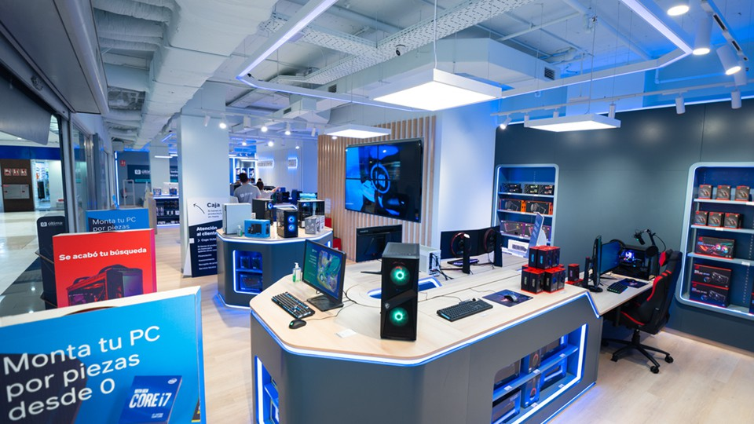

01
Limpieza
Eliminamos polvo y suciedad del interior del ordenador para mejorar su refrigeración y mantenimiento.
Saber más →REPARACIÓN · MANTENIMIENTO · OPTIMIZACIÓN
Reparamos, mantenemos y optimizamos tu ordenador para que vuelva a funcionar como debería.

NUESTROS SERVICIOS
Eliminamos polvo y suciedad del interior del ordenador para mejorar su refrigeración y mantenimiento.
Saber más →
Ajustamos Windows y el sistema para conseguir un funcionamiento más rápido y fluido.
Saber más →Diagnosticamos problemas de hardware y software y buscamos la solución adecuada.
Saber más →PC REPAIR
Queremos que tu ordenador vuelva a funcionar correctamente y que entiendas qué le ocurre.
Analizamos cada equipo antes de actuar para evitar cambios o reparaciones innecesarias.
Conocer nuestros servicios →Buscamos primero la causa del problema.
Tratamos cada equipo como si fuera nuestro.
Buscamos que el equipo funcione mejor.
¿TIENES UN PROBLEMA?
Cuéntanos qué ocurre y veremos cómo podemos ayudarte.
Contactar